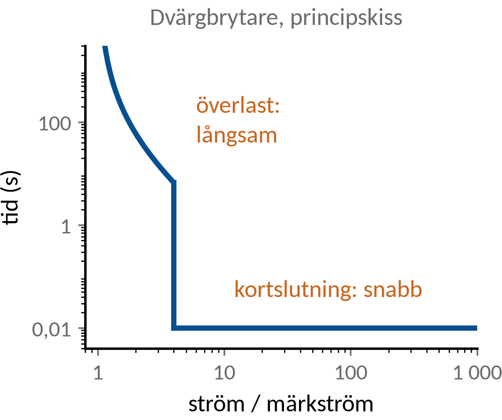
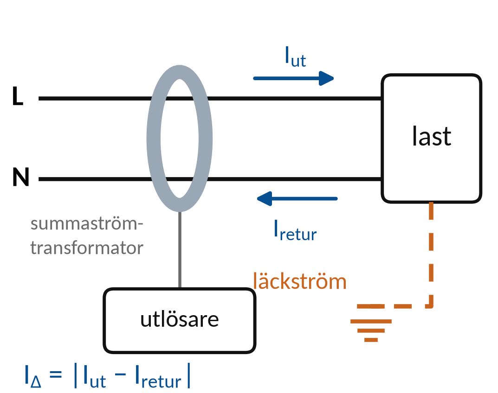
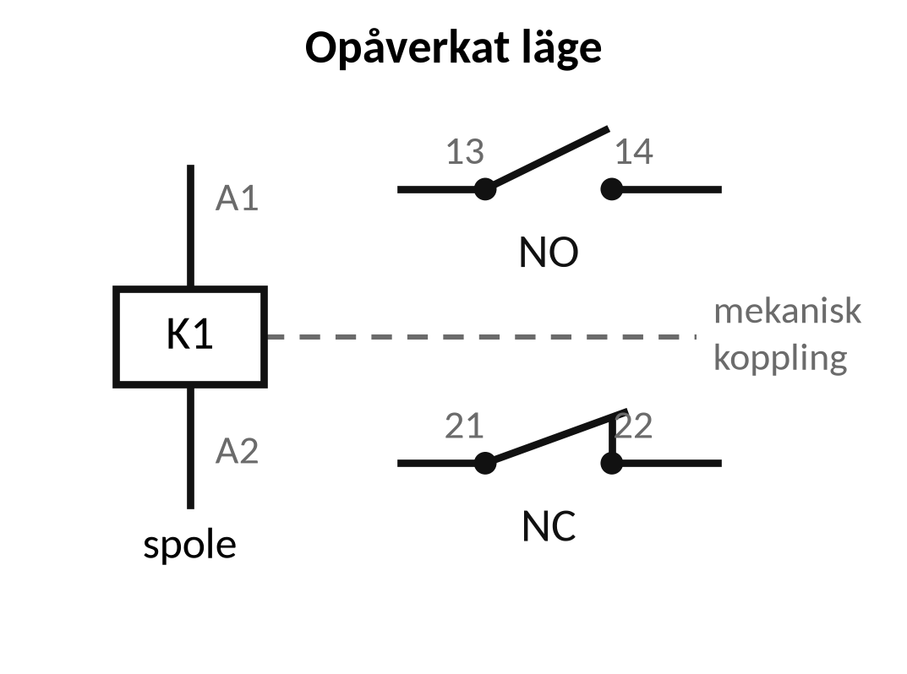
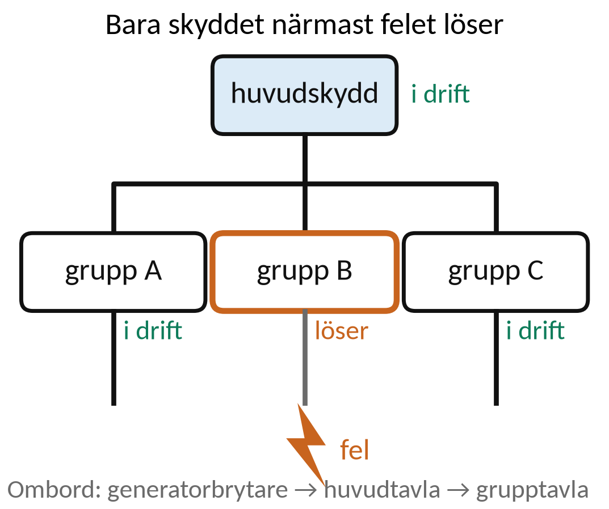
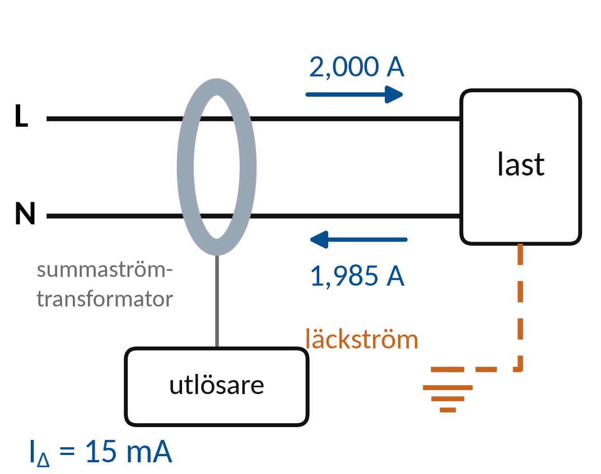
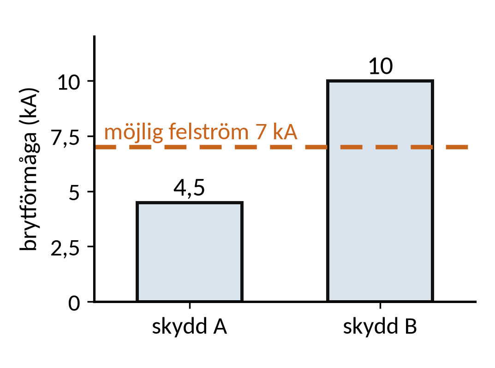

Vecka 43 · Del 1 av 3
Del 1: Komponenter och skydd
1 Översikt
Det här ska du kunna
- Förklara vad vanliga skydds- och manöverapparater gör.
- Skilja märkström, brytförmåga och utlösningsvillkor.
Fundera först: Kan en kontaktor ersätta både kortslutningsskydd och motorskydd? Svaret finns i teorin nedan.
Så gör du
- Läs teorin (7 korta avsnitt). Titta på figuren till varje avsnitt.
- Följ exemplen med papper och räknare, steg för steg.
- Gör övningarna 1.1–1.10. Fastnar du: Ledtråd 1 visar vilket samband du behöver och var i teorin det förklaras. Ledtråd 2 visar hur du börjar och Ledtråd 3 exemplet som räknar samma sorts uppgift med andra tal. Öppna facit när du har ett eget svar.
- Lämna in veckans uppgifter: Veckans inlämning.
Så skriver du en lösning som går att följa
1. Givet och sökt
Skriv av värden, enheter och vad du ska bestämma.
2. Samband och villkor
Välj formel eller princip. Kontrollera koppling, driftfall och antaganden.
3. Uträkning och kontroll
Omvandla enheter, sätt in värden och tolka resultatet.
I resonemangsfall: koppla observation till en motiverad slutsats.
Lärarens presentation · PDF · Räknarhjälp · Formelblad
Förkortningar och beteckningar i den här delen (3)
- IT-nät
- isolerat nät (franska: isolé–terre). Nät utan direkt förbindelse mellan systemet och jord eller skrov. Vanligt ombord. Behandlas i vecka 44.
- DC
- likström, likspänning (engelska: direct current). Ström eller spänning med samma riktning hela tiden, till exempel från ett batteri. På multimetern V⎓ eller DC.
- AC
- växelström, växelspänning (engelska: alternating current). Ström eller spänning som byter riktning hela tiden, till exempel 230 V i ett eluttag. På multimetern står läget ofta som V~ eller AC.
2 Teori
Läs avsnitten i ordning. Övningarna hänvisar hit.
1. Apparatens uppgift och märkning
Kontaktor manövrerar last genom elektriskt styrda kontakter.
Överlast och kortslutning är olika typer av överström.
Märkström, spänningsklass och brytförmåga beskriver olika krav.
Selektivitet kräver samordning så att rätt skyddsnivå kopplar bort felet.
2. Manöver och frånskiljning
En brytare kan användas för att koppla en krets.
Förmåga till säker frånskiljning måste framgå av apparatens data.
Funktionen bestäms av märkning och konstruktion
En kontaktor är avsedd för upprepad manöver.
Öppen kontaktor är inte automatiskt tillräcklig arbetsfrånskiljning.
3. Säkring och dvärgbrytare
Överström kan vara överlast eller kortslutning.
Skyddets ström–tidsegenskap avgör hur snabbt det löser.

Märkström är inte samma sak som brytförmåga
Ett skydd märkt 16 A kan tåla normal lastström.
Angiven brytförmåga beskriver vilken felström det kan bryta.
4. Jordfelsbrytare
Jordfelsbrytaren reagerar på differens mellan utgående och återkommande ström i de ledare som övervakas.

IΔ = skillnaden mellan strömmarna
En ren jordfelsbrytare ersätter inte överströmsskydd.
Ombord: i ett IT-nät dimensionerat för fortsatt drift ger första jordfelet normalt larm, inte utlösning. Jordfelsbrytare används främst i 230 V uttagsgrupper.
5. Kontaktor och relä
En spole påverkar kontakter som manövrerar andra kretsar.
Hjälpkontakter kan ge hållning och återkoppling.

NO: normalt öppen
NC: normalt sluten
Normalläget avser angivet opåverkat tillstånd.
Spolens märkspänning är skild från huvudkontaktens lastdata.
6. Motorskydd
Motorskydd ska anpassas till motor och startförlopp.
Överlastfunktion och kortslutningsskydd behöver samordnas.
Märkdata och tillverkarens anvisning styr
Enbart motorns kW-tal räcker inte för ett skyddsval.
Ström, drift, starttid och omgivning påverkar bedömningen.
7. Selektivitet
Selektivitet innebär att avsedd skyddsnivå kopplar bort felet så att övriga delar kan fortsätta fungera.

Utlösningskurvor och samordningsdata behövs
Två skydd med olika märkström är inte automatiskt selektiva.
Bedömningen gäller också den möjliga kortslutningsströmmen.
3 Exempel
Följ exemplet steg för steg med papper och räknare. Övningarna använder samma metod med andra tal.
Exempel: differensström
En enfaskrets har 2,000 A ut och 1,985 A tillbaka genom de övervakade ledarna.

IΔ = |Iut − Iretur|
- IΔ = |2,000 − 1,985| = 0,015 A.
- 0,015 · 1 000 = 15 mA.
- Skillnaden innebär att en del av strömmen tar en annan väg.
Vilken utlösning som ska ske kräver skyddets data. Här beräknas endast differensströmmen.
Exempel: skyddsdata
Möjlig kortslutningsström är 7 kA. Skydd A har 4,5 kA brytförmåga och B har 10 kA. Ingen backup anges.

Brytförmåga jämförs med möjlig felström
- A: 4,5 kA är mindre än 7 kA och täcker inte kravet.
- B: 10 kA är större än 7 kA och klarar just denna jämförelse.
- Spänningsklass, utlösning och samordning måste också prövas.
Att klara brytförmågan är en nödvändig del av valet. Övriga skyddsvillkor återstår.
4 Övningar
Räkna på papper. Bocka av en övning när du har kontrollerat ditt svar mot facit. Avbockningen sparas i den här webbläsaren.
Övning 1.1: Kontaktor
Vilken huvuduppgift har en kontaktor i en motorstartare?
Givet: En vanlig kontaktor i en motorstartare. Skydden behandlas för sig.
Ledtråd 1: vilken princip?
Utgå från Vad händer när spolen får matning?. Läs Teori 1: Apparatens uppgift och märkning.
Ledtråd 2: hur börjar jag?
Spolen tillhör manöverkretsen. Huvudkontakterna ligger i kraftvägen till motorn. Följ vad som händer när spolen får rätt matning och koppla det till kontaktorns huvuduppgift.
Ledtråd 3: samma metod i ett exempel
Samma sätt att resonera: Exempel: differensström. Gör likadant med fallet i den här uppgiften och motivera varje steg.
Facit
Att med en liten manöverström i spolen koppla till och från lastens kraftväg.
Övning 1.2: Säkringens uppgift
Nämn två typer av överström som ett överströmsskydd ska klara.
Givet: Frågan gäller vilka slags fel ett överströmsskydd ska kunna hantera.
Ledtråd 1: vilken princip?
Utgå från Vilka slags överström kan uppstå?. Läs Teori 1: Apparatens uppgift och märkning.
Ledtråd 2: hur börjar jag?
Tänk på en för stor last i en hel krets och på en oavsiktlig väg med låg impedans. Beskriv båda typerna och skillnaden i förlopp. Hänvisa till ström–tidsegenskapen för utlösning.
Ledtråd 3: samma metod i ett exempel
Samma sätt att resonera: Exempel: differensström. Gör likadant med fallet i den här uppgiften och motivera varje steg.
Facit
Överlast (för stor ström under längre tid i en hel krets) och kortslutning (mycket stor ström genom en oavsiktlig väg).
Övning 1.3: Två märkdata
En dvärgbrytare är märkt 16 A och 6 kA. Förklara varför båda uppgifterna behövs.
Givet: Dvärgbrytaren är märkt 16 A och 6 kA. Brytförmågan gäller under de villkor som anges i märkningen.
Ledtråd 1: vilken princip?
Utgå från Märkström och brytförmåga är olika apparatdata. Läs Teori 1: Apparatens uppgift och märkning.
Ledtråd 2: hur börjar jag?
Märkströmmen anges i A och brytförmågan ofta i kA (1 kA = 1 000 A). Koppla den ena uppgiften till normal last och den andra till den största felström som måste kunna brytas.
Ledtråd 3: samma metod i ett exempel
Samma sätt att resonera: Exempel: differensström. Gör likadant med fallet i den här uppgiften och motivera varje steg.
Facit
16 A är den ström brytaren tål i normal drift. 6 kA är den största kortslutningsström den säkert kan bryta.
Övning 1.4: Differensström
En enfaskrets har 5,000 A ut och 4,970 A tillbaka genom de övervakade ledarna. Beräkna differensströmmen.
Givet: Strömmarna är uppmätta samtidigt: 5,000 A ut och 4,970 A tillbaka.
Ledtråd 1: vilket samband?
Använd IΔ = |Iut − Iretur|. Läs Teori 4: Jordfelsbrytare.
Ledtråd 2: hur börjar jag?
IΔ är differensströmmen. Dra returströmmen från den utgående strömmen och multiplicera med 1 000 för att få mA.
Ledtråd 3: steg för steg med andra tal
1) Ta strömmen ut minus strömmen tillbaka, utan tecken. 2) Gör om A till mA. Exempel: 8,000 A ut och 7,985 A tillbaka ger IΔ = 0,015 A = 15 mA. Rimlighet: skillnaden är ström som tar en annan väg, till exempel genom ett jordfel.
Facit
IΔ = 5,000 − 4,970 = 0,030 A = 30 mA.
Svar: IΔ ≈ 30,0 mA
Övning 1.5: Överlast utan jordfel
En jordfelsbrytare utan överströmsskydd matar en last som drar för stor ström, men all ström kommer tillbaka. Varför behövs ändå ett överströmsskydd?
Givet: Jordfelsbrytaren har inget inbyggt överströmsskydd. Lasten drar för stor ström men har ingen läckström.
Ledtråd 1: vilken princip?
Utgå från Vad mäter jordfelsfunktionen?. Läs Teori 1: Apparatens uppgift och märkning.
Ledtråd 2: hur börjar jag?
Jämför strömmen ut med strömmen tillbaka i de övervakade ledarna, även när lastströmmen är stor. Förklara vilket fel jordfelsfunktionen mäter och vilket fel ett separat överströmsskydd behöver hantera.
Ledtråd 3: samma metod i ett exempel
Samma sätt att resonera: Exempel: differensström. Gör likadant med fallet i den här uppgiften och motivera varje steg.
Facit
Jordfelsbrytaren mäter bara skillnaden mellan ut- och returström. Vid överlast återkommer all ström och skillnaden är noll, så den löser inte.
Övning 1.6: Hjälpkontakt
En NO-hjälpkontakt till K1 är opåverkad. Är den öppen eller sluten? Vad händer normalt när K1 drar?
Givet: En NO-hjälpkontakt på en vanlig kontaktor K1. Inga specialfunktioner och inga fel.
Ledtråd 1: vilken princip?
Utgå från NO = normalt öppen, NC = normalt sluten. Läs Teori 5: Kontaktor och relä.
Ledtråd 2: hur börjar jag?
Normalläget är det läge kontakten har när spolen är strömlös. K1:s kontakter följer spolen. Ange kontaktens läge före och efter att K1 drar.
Ledtråd 3: samma metod i ett exempel
Samma sätt att resonera: Exempel: skyddsdata. Gör likadant med fallet i den här uppgiften och motivera varje steg.
Facit
Öppen i vila. Den sluter när K1 drar.
Övning 1.7: Spolspänning
En kontaktor har huvudkontakter för 440 V men en spole märkt 24 V DC. Vilken uppgift styr spolens matning?
Givet: Huvudkontakter för 440 V, spole märkt 24 V DC.
Ledtråd 1: vilket samband?
Använd Vilken del av apparaten gäller varje märkvärde?. Läs Teori 3: Säkring och dvärgbrytare.
Ledtråd 2: hur börjar jag?
Huvudkontakternas spänning och spolens spänning gäller olika delar av apparaten. Ta spolens spänning och strömart (AC eller DC) från dess märkning, inte huvudkontakternas värde.
Ledtråd 3: steg för steg med andra tal
1) Leta upp märkningen för varje del av apparaten: huvudkontakterna, spolen och hjälpkontakterna. 2) Varje märkvärde gäller bara sin del. 3) Spolen matas från manöverkretsen och ska ha spänningen som står på spolen. Exempel: ett relä med kontakter för 230 V AC och en spole märkt 12 V DC matas med 12 V DC i styrkretsen, även om kontakterna bryter 230 V.
Facit
Spolens märkning, 24 V DC, styr manöverkretsens matning. 440 V gäller huvudkontakterna.
Övning 1.8: Selektivitetsfall
Ett fel i en undercentral gör att både gruppskyddet och huvudskyddet löser ut. Vad behöver utredas?
Givet: Gruppskydd och huvudskydd löser ut för samma fel. Utlösningskurvor och felström är inte kända.
Ledtråd 1: vilken princip?
Utgå från Vilket skydd borde ha löst?. Läs Teori 3: Säkring och dvärgbrytare.
Ledtråd 2: hur börjar jag?
När skydden är rätt samordnade kopplar det närmaste skyddet bort felet, och de felfria delarna fortsätter att fungera. Ange vad som behöver utredas och vilka data från tillverkaren som behövs.
Ledtråd 3: samma metod i ett exempel
Samma sätt att resonera: Exempel: skyddsdata. Gör likadant med fallet i den här uppgiften och motivera varje steg.
Facit
Selektiviteten mellan gruppskydd och huvudskydd. Det krävs tillverkarens ström–tidskurvor och den möjliga felströmmen.
Övning 1.9: Brytförmåga
Den beräknade kortslutningsströmmen är 8 kA. Det föreslagna skyddet har brytförmågan 6 kA, och det finns inget dokumenterat backupskydd. Kan valet godkännas?
Givet: Möjlig kortslutningsström 8 kA, brytförmåga 6 kA. Inget dokumenterat backupskydd.
Ledtråd 1: vilken princip?
Utgå från Brytförmåga måste täcka möjlig felström. Läs Teori 3: Säkring och dvärgbrytare.
Ledtråd 2: hur börjar jag?
Ett dokumenterat backupskydd hade kunnat ändra bedömningen, men du får inte anta att det finns. Jämför värdena och motivera om valet uppfyller kravet.
Ledtråd 3: samma metod i ett exempel
Samma sätt att resonera: Exempel: skyddsdata. Gör likadant med fallet i den här uppgiften och motivera varje steg.
Facit
Nej. 6 kA är mindre än 8 kA, och ingen backupkombination är dokumenterad.
Övning 1.10: Motorpaket
Nämn vilka funktioner som behöver finnas runt en motor för normal manöver, överlastskydd och kortslutningsskydd.
Givet: Uppgiften gäller vilka funktioner som behövs, inte vilka produkter eller inställningar.
Ledtråd 1: vilken princip?
Utgå från Vilka funktioner behövs runt motorn?. Läs Teori 7: Selektivitet.
Ledtråd 2: hur börjar jag?
Tänk på normal start och stopp, på för hög belastning och på en kortslutning i kabel eller motor. Ange hur funktionerna samverkar. Verkligt val behöver motor-, start- och samordningsdata.
Ledtråd 3: samma metod i ett exempel
Samma sätt att resonera: Exempel: skyddsdata. Gör likadant med fallet i den här uppgiften och motivera varje steg.
Facit
Kontaktor för manöver, överlastskydd (motorskydd) och kortslutningsskydd (säkring eller brytare). Verkligt val kräver motor- och samordningsdata.
Klart med delen?
Varför bevisar olika märkströmmar inte att två skydd är selektiva?
Identifiera skydd och manöverkomponenter inför veckans motorstyrningsschema. Dokumentera funktion och vilken data som behövs.
5 Labben
Labben kommer sist i veckan, när du har gått igenom del 1–3. Du använder samma metod som i övningarna: räkna först, läs av, jämför och förklara.
Veckans labbar Veckans inlämning
Källor och fortsatt läsning
Studieplanen YH03151, 18 september 2026 Sjöskolans kursmaterial och originalmall
Schneider Electric: samordning av skydd
IEC: IEC 60617, symboler för elscheman
SEK: SS-EN 50110-1, utgåva 4:2024